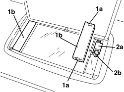

7040E21 COURTESY LIGHT FOR SUN VISOR MIRROR (ONE), LH OR RH - R.R
- Path
- Procedures > 70 FITTINGS > 7040 BODY INTERIOR FITTINGS AND TRIM > 7040E INTERIOR COURTESY LIGHT SYSTEM > 7040E21 COURTESY LIGHT FOR SUN VISOR MIRROR (ONE), LH OR RH - R.R
- Kind
- repair procedure (removal / refitting; the operation number is the code)
- Applies to
- all engines; all production periods
- Interactive page
- https://sloeber94.github.io/elrnDB-aBrrSpdr/en/#/946002624
Applies to: all engines; all production periods
 Removing
Removing
 Refitting
Refitting- Lower the sun visor.
1. Release the retainers (1a) and remove the cover (1b) for the courtesy light involved in the removal.
2. Move the bulb holder (2a) slightly and extract the bulb (1b) (press-fit).

Applies to: all engines; all production periods
Refitting
Removing- Check that the courtesy light and the bulb are not damaged.
- Fit the bulb in place.
- Position the bulb holder.
- Position the courtesy light cover and do up the retainers.
- Check that the switch is lamp properly.